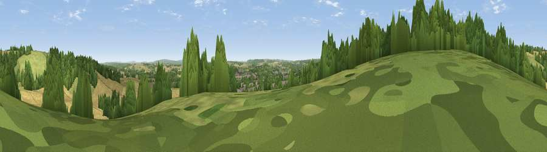

Viewpoint near Holybourne
#31161 in England · top 40% of its area beats it · near HolybourneThe view, rendered

A 360° render of this exact spot computed from the terrain model, tree cover and land cover — summer colours, afternoon light, calibrated against photographs of famous viewpoints. Real trees, hedges and buildings will differ in detail.
The panorama
Grey silhouette: terrain skyline in each direction (720 bearings, Earth curvature and refraction included). Dashed green: skyline with trees (+15 m) and buildings (+8 m) as obstacles. Blue strip: how far the ground is visible on each bearing.
Where the view opens
Wedge length = distance to the farthest visible ground on that bearing (vegetation-aware). Rings at 10, 25 and 50 km.
What fills the view
37% cropland · 30% woodland · 23% grassland · 11% built-up
Angular shares of the visible panorama (visual magnitude), not map area. Landscape diversity 0.57 (0–1 Shannon).
Key numbers
More beautiful places nearby
The staircase of upgrades: each row has a higher view potential than everything closer. Driving times are estimates from straight-line distance, calibrated against real road routing — check an actual route before setting out.
| Place | Direction | Drive | Score |
|---|---|---|---|
| Viewpoint near Holybourne | NE · 1 km | ~3 min | 51.2 |
| Wick Hill | SSE · 7 km | ~14 min | 52.4 |
| Horsedown Common | NE · 8 km | ~16 min | 59.0 |
| Noar Hill | SSE · 10 km | ~20 min | 62.3 |
| Viewpoint near Steep | S · 14 km | ~26 min | 68.7 |
| Viewpoint near Buriton | S · 21 km | ~35 min | 75.3 |
| Viewpoint near Buriton | S · 21 km | ~36 min | 80.0 |
| Beacon Hill | SSE · 25 km | ~40 min | 85.8 |
51.16844, -0.97122 · source: screening · position refined by local search. Computed location — check access rights before visiting.